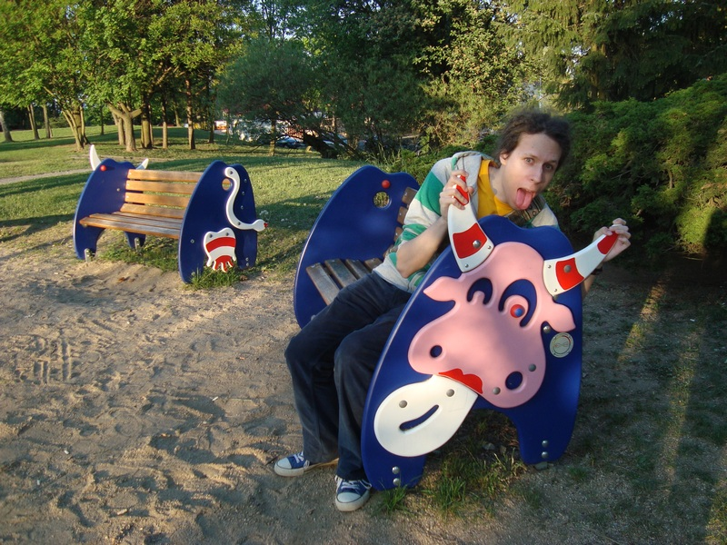
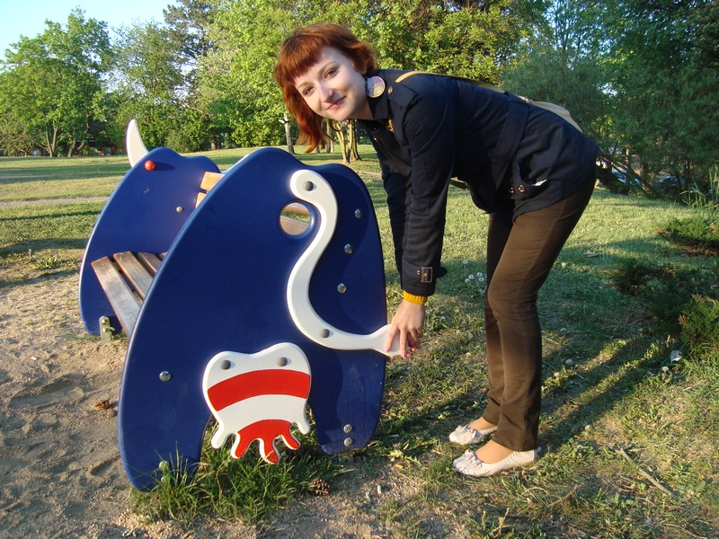

Brněnská muzejní noc byla mou poslední malou předstátnicovou kratochvílí. Letos jsme se nejvíc těšili na nově zrekonstruovanou hvězdárnu a planetárium, vydali jsme se tedy najisto rovnou na Kraví horu. Fronta, která se táhla kolem celého areálu, nás bohužel odradila hned zkraje, takže jsme si koupili jen pivko a poseděli v parčíku na úžasných kravích lavičkách. Odtud také pochází jediné fotky, které jsme za celý večer pořídili :D…

Kraví lavičky…

…na Monte Bu
Naše další kroky vedly do Domu umění města Brna, který byl dostatečně alternativní na to, aby tam po sobě nešlapaly davy lidí, ale zároveň alternativní až moc na to, abychom si z výstavy odnesli nějaký hlubší dojem :D . Do třetice jsme tedy vsadili na Palác šlechtičen, kde jsme měli sraz s Žánkem a Zuzejkem. Vevnitř sice bylo opět příšerně narváno, ale program nás zaujal. Nejprve jsme shlédli ukázku židovských tanců a pak jsme se šli podívat, jaké výstavy Palác šlechtičen nabízí. Výstava Život na brněnské ulici byla vytvořena z fotografií studentů Filosofické fakulty, které zachycovaly brněnské pouliční umělce. Druhá expozice s názvem V utrpení a boji/brněnští Židé v osudových momentech XX. století přilákala spoustu návštěvníků, takže jsme neměli čas (a popravdě ani chuť) prodírat se těmi davy, abychom si mohli všechno pečlivě projít a přečíst. Rozhodně se ale jednalo o nejzajímavější výstavu, kterou nám letos Muzejní noc nabídnula. V prvním patře se pak nacházel noční ateliér VOŠ restaurátorské Brno, který jsme si také prošli, a pak už jsme se vydali k poslední noční zastávce, kterou bylo nádvoří Domu pánů z Kunštátu. Zde se konal Artjarmark, kde mladí výtvarníci prodávali své ruční práce, originální šperky i netradiční dárky. Bylo tu opravdu na co koukat, takový “oživlý” Fler :D. Naštěstí jsem usoudila, že už mám doma spoustu náušnic i bižu a stejně to nestíhám všecko unosit, takže jsem odolala pokušení :D. Nazávěr už jsme si jen zašli posedět do hospody vedle Trojky a pak se vydali pěšky domů.
Co se týče programu, tak letos byla Muzejní noc trochu slabší a navíc v některých muzejích vybírali vstupné (ikdyž spíš symbolické). Hvězdárna nám tedy protentokrát nevyšla, ale nemusíme smutnit - v kapesním průvodci jsme letos objevili několik slevových kupónu do brněnských muzejí a mezi nimi také 1+1 vstupenku zdarma na jakýkoliv astronomický pořad v planetáriu, takže o ten zážitek nakonec nepřijdeme :-).
Komentáře (3)
Komentáře jsou uzavřené.